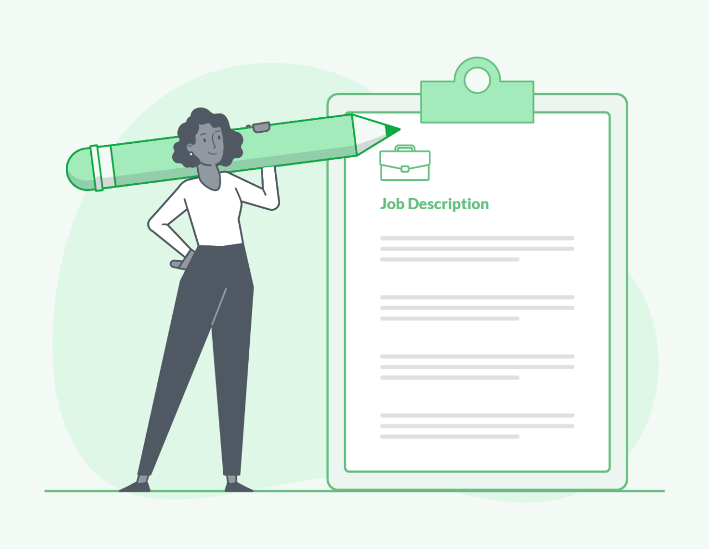

You can fight it, you can do nothing but scream about what you’ve lost, or you can accept that and try to put together something that’s good.”
― Elizabeth Edwards

Biography
I am Arianne Boyd. I am from New Olreans, LA but I have lived in
multiple places including Mississippi, Texas, and Georgia. I have
always been into the arts. Throughout my life I focused heavily on art
and dance until I began college and started to focus on what I thought
I wanted in a career. I picked art up again in 2017 and it became a
side job where I would get hired to do commissioned pieces but I
realized that was also not as fulfilling as creating for myself and
allowing others to enjoy it. So I find myself now seeking avenues that
bring me joy and financial stability. I have a one year old son that I
am looking to provide everything for and I want him to be rpoud of who
his mom is.
Education
I graduated from Jackson State University with my degree in Biology.
Originally I wanted to be a veterinarian until I realized my love for
animals stopped at petting and cuddling. I did not see myself
operating on animals, seeing them in tough situations, or worse,
euthanizing them when necessary. I find that I like learning code
because I am a person that likes a challenge and it is an attribute
that I am beginning to lean more into.

Overview
I have an extensive background in sales that has allowed me to gain
valuable skills and experience including but not limited to the skill
of being able to talk to anyone, asking questions that would allow me
to offer products and services tailored to one's personal needs, and
how to work both as a team and as an individual. Interestingly I was
also a flight attendant which was such a new experience I did not see
coming. I was very comfortable with people but this placed me in a
more authoratative position as I had to manage myself and everyone on
the plane. I learned a lot about safety and developed an eye for
detail. As flight attendants we had to develop an awareness for things
such as human trafficking, bombs, terrorist, drunk and even sick
passengers.
- Sire (My son)
- Freedom
- Future
- Personal Growth
- Travel
- Family
- Friends
- Desire to succeed
- Helping others
- Money